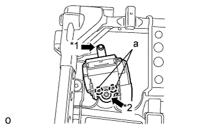
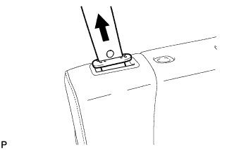
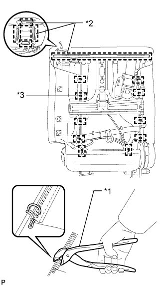
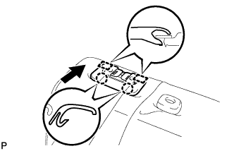
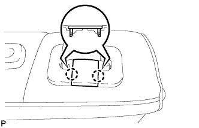
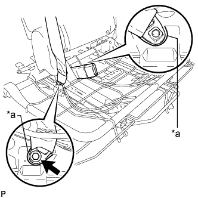

ЦЕНТРАЛЬНЫЙ РЕМЕНЬ БЕЗОПАСНОСТИ ЗАДНЕГО СИДЕНЬЯ В СБОРЕ (выдвижное сиденье раздельного типа 60/40 с функцией облегчения посадки "Walk-in" с левой стороны) > УСТАНОВКА |
| 1. УСТАНОВИТЕ ЛЕВЫЙ 3-ТОЧЕЧНЫЙ РЕМЕНЬ БЕЗОПАСНОСТИ СИДЕНЬЯ № 1 В СБОРЕ |
|  |
Совместите захваты с установочными отверстиями ремня безопасности и установите устройство вытяжения ремня безопасности, закрепив его гайкой и болтом, как показано на рисунке.
| *1 | Болт |
| *2 | Гайка |
| 2. УСТАНОВИТЕ НАПРАВЛЯЮЩУЮ ПЛЕЧЕВОГО КРЕПЛЕНИЯ РЕМНЯ ЗАДНЕГО СИДЕНЬЯ |
Введите в зацепление направляющую и захват, чтобы закрепить направляющую ремня.
| 3. УСТАНОВИТЕ ОБИВКУ СПИНКИ СИДЕНЬЯ ВМЕСТЕ С ПОДУШКОЙ |
|  |
Подсоедините ремень безопасности к обивке спинки сиденья с подушкой.
|  |
Введите в зацепление крепления.
| *1 | Щипцы для витковых пружин |
| *2 | Крюк |
| *3 | Витковая пружина |
Используя щипцы для витковых пружин, закрепите обивку спинки сиденья с подушкой новыми витковыми пружинами.
| 4. УСТАНОВИТЕ ДЕРЖАТЕЛЬ ПОДГОЛОВНИКА ЗАДНЕГО СИДЕНЬЯ № 1 В СБОРЕ |
Введите в зацепление 4 захвата, чтобы закрепить 2 держателя.
| 5. УСТАНОВИТЕ ПАНЕЛЬ ПОКРЫТИЯ СПИНКИ ЛЕВОГО ЗАДНЕГО СИДЕНЬЯ В СБОРЕ |
Введите в зацепление 7 фиксаторов, чтобы установить коврик.
| 6. УСТАНОВИТЕ ОБИВКУ СПИНКИ ЗАДНЕГО СИДЕНЬЯ |
Введите в зацепление 4 захвата, чтобы установить крышку.
| 7. УСТАНОВИТЕ КРЫШКУ ПЛЕЧЕВОГО КРЕПЛЕНИЯ РЕМНЯ ЗАДНЕГО СИДЕНЬЯ |
Подсоедините ремень безопасности к крышке.
|  |
Закрепите 2 направляющие и 2 захвата, чтобы установить накладку.
| 8. УСТАНОВИТЕ КРЫШКУ КРЕПЛЕНИЯ РЕМНЯ БЕЗОПАСНОСТИ |
|  |
Введите в зацепление 2 захвата для установки колпачка.
| 9. УСТАНОВИТЕ РЫЧАГ ЗАМКА ЛЕВОГО ЗАДНЕГО СИДЕНЬЯ В СБОРЕ |
Введите в зацепление 2 захвата для установки колпачка.
| 10. УСТАНОВИТЕ КОЛПАЧОК ЛЕВОЙ РУЧКИ РЕГУЛЯТОРА НАКЛОНА |
 |
Введите в зацепление направляющую и захват, чтобы установить колпачок.
| 11. УСТАНОВИТЕ ЗАМОК РЕМНЯ БЕЗОПАСНОСТИ ЛЕВОГО ЗАДНЕГО СИДЕНЬЯ № 1 В СБОРЕ |
|  |
Установите замок ремня безопасности, подсоедините крепление 3-точечного ремня безопасности и закрепите его болтом.
| *a | Выступающая часть |
| 12. УСТАНОВИТЕ СПИНКУ ЦЕНТРАЛЬНОГО СИДЕНЬЯ В СБОРЕ |
Закрепите спинку центрального сиденья 2 болтами.
| 13. УСТАНОВИТЕ ОБИВКУ ПОДУШКИ СИДЕНЬЯ ВМЕСТЕ С ПОДУШКОЙ |
 |
Введите в зацепление крюк.
 |
Подсоедините крепления, чтобы закрепить обивку подушки сиденья вместе с подушкой.
| 14. УСТАНОВИТЕ КРЫШКУ ЗАЩЕЛКИ ЗАМКА СПИНКИ ЛЕВОГО ЗАДНЕГО СИДЕНЬЯ |
Установите крышку и введите в зацепление 3 фиксатора.
| 15. УСТАНОВИТЕ МОЛДИНГ ПОДУШКИ ЛЕВОГО ЗАДНЕГО СИДЕНЬЯ |
 |
Переместите молдинг в направлении, указанном на рисунке стрелкой, чтобы ввести в зацепление направляющую.
Введите в зацепление 3 захвата и фиксатор, чтобы установить молдинг.
| 16. УСТАНОВИТЕ ПРАВУЮ КРЫШКУ ПЕТЛИ ЦЕНТРАЛЬНОГО СИДЕНЬЯ |
 |
Введите в зацепление 2 направляющих и закрепите крышку фиксатором.
| 17. УСТАНОВИТЕ РУЧКУ ОТПУСКАНИЯ РЕГУЛЯТОРА НАКЛОНА ЛЕВОГО СИДЕНЬЯ |
Установите рукоятку и закрепите ее 3 винтами.
| 18. УСТАНОВИТЕ ВЕРХНЮЮ ОТКИДНУЮ КРЫШКУ ЛЕВОГО ЗАДНЕГО СИДЕНЬЯ |
 |
Введите в зацепление 3 захвата, чтобы установить крышку.
| 19. УСТАНОВИТЕ ЛЕВОЕ ЗАДНЕЕ СИДЕНЬЕ № 1 В СБОРЕ |
Установите левое заднее сиденье № 1 в сборе (Нажмите здесь).